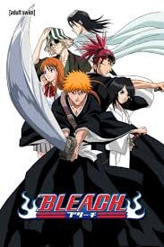

The anime adaptation of Tite Kubo's Bleach manga was produced by Studio Pierrot and directed by Noriyuki Abe, featuring music arranged by Shirō Sagisu. It began broadcasting in Japan on October 5, 2004, on TV Tokyo. It ceased broadcasting on March 27, 2012; a total of 366 episodes were aired before the anime concluded. However, it was announced on March 20th 2020 that the final arc of the manga would finally be animated and began airing on October 11, 2022. The series can be streamed on Hulu, Apple TV, Disney+, and Prime Video.
The anime version of the story generally follows the manga quite closely, but diverges in some important aspects: in particular, seasons 4 and 5 (Bount arc), season 8 (The New Captain Shūsuke Amagai arc), season 12 and 13 (Zanpakutō Unknown Tales arc and Beast Swords arc) and season 15 (Gotei 13 Invading Army arc) are anime-only arcs, not written by Tite Kubo. Commonly called "filler" episodes, these anime-only arcs were necessitated by the anime's approximately weekly production schedule outpacing the manga, as the manga chapters need to be published before manga-based content can be animated. Roughly, each episode of the anime covers the equivalent of two to four chapters of the manga. Additionally, there would be an Omake shown at the end of every episode with the Shinigami Illustrated Picture Book being the most common one shown. Many of the omakes shown comprise of manga omakes and anime original ones that sometimes add to anime filler arcs.
In addition to the regular series, the anime also comprises four movies and two OVAs.
Episodes 1-167 were made and broadcast in 4:3, with episodes 168+ made and broadcast in 16:9 wide screen. The latter episodes of the anime were simulcast on Crunchyroll, and the English dubbed version aired on Adult Swim. The original anime is currently available on Hulu with the omakes shown at the end of each episode cut out.
Production Studio: Studio Pierrot
TV Network: TV Tokyo
Director: Noriyuki Abe
Music: Shirō Sagisu
Character Designer: Masashi Kudo
Art Supervisor: Takagi Satoko
Colour Supervisor: Ueki Hideo
Writers: Masashi Sogo, Kento Shimoyama, Tsuyoshi Kida, Natsuko Takahashi, Michiko Yokote, Masahiro Ōkubo